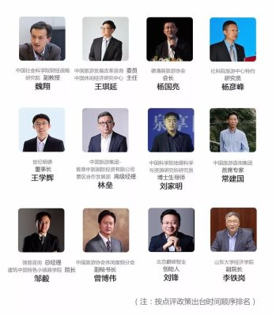

2017中国旅游业10大政策盘点
2017-12-29 18:16
来源：新旅界
【旅游高参】编者按：2017年对于旅游行业来说又是不同寻常的一年。在这一年，IPO大门再次对旅企打开，挂牌新三板旅企出现摘牌潮；赴韩游骤降至冰点，定制游时常刷屏；OTA聚焦盈利，初创公司寻巨头加持；酒店并购加剧，非标住宿热度不减；跨界巨头你来我往，小镇仍是焦点话题；创意文创产品开始萌芽，黑科技刷新业界认知……回顾2017，我们看到整个行业于曲折中向好发展；展望2018，让我们一起祝福旅游界的明天更美好。
2017年是我国全面实施十三五旅游发展规划的开局之年，这一年里，国家领导人多次对旅游发展做出指示，发布多项政策规范助力这项“幸福”产业，这些政策是否真如制定初衷般推动着行业发展？实践过程中还存在哪些问题？我们从2017年1月-12月发布的旅游相关政策中挑选出了10个最具代表性方针政策，并邀请一线行业大咖及专家学者对各种政策做了进一步分析解读。

1.“旅游+”首次被写入中央一号文件
2月5日，中央一号文件《中共中央、国务院关于深入推进农业供给侧结构性改革加快培育农业农村发展新动能的若干意见》正式发布，首次写入“旅游+”概念。
文件提出，大力发展乡村休闲旅游业，充分发挥乡村各类物质与非物质资源富集的独特优势，利用“旅游＋”“生态＋”等模式，推进农业、林业与旅游、教育、文化、康养等产+业深度融合，丰富乡村旅游业态和产品，打造各类主题乡村旅游目的地和精品线路，发展富有乡村特色的民宿和养生养老基地，鼓励农村集体经济组织创办乡村旅游合作社，或与社会资本联办乡村旅游企业，多渠道筹集建设资金，大力改善休闲农业、乡村旅游、森林康养公共服务设施条件，完善休闲农业、乡村旅游行业标准等。
评论员点评：
中国社会科学院财经战略研究院副教授魏翔：2017年中央关于农业发展的一号文件首提“旅游+”。在鼓励农业产业融合发展的条款中，旅游业排在了林业之后，成为农业融合的最重要对象产业之一。这取决于中国农业的供给侧结构性改革进一步提速，农业需要进一步提高附加值和效率值，这就使旅游业这种即具生产功能又具消费功能的产业成为高效农业的优良载体和优良助燃剂。
有关农业和旅游业的融合，我们也从文件中看到了“提醒”和“预警”。从前一阶段的实践看，需要对农业特色小镇和田园综合体的房地产化、粗放规模化和盲目趋同化保持高度警惕和提前防范。此外，关于休闲农业、乡村民宿发展过程中出现的“去农业化”、以“情怀”“模式”“全域”等为幌子所进行的虚体化运作，值得各地方政府和投资主体清醒认识和加强甄别。
2.国家旅游局发布《全域旅游示范区创建工作导则》
6月12日，国家旅游局发布《全域旅游示范区创建工作导则》，为全域旅游示范区创建工作提供行动指南。
《导则》指出，创建工作要实现“五个目标”，并起到相应的示范引领作用：一是实现旅游治理规范化；二是实现旅游发展全域化；三是实现旅游供给品质化；四是实现旅游参与全民化；五是实现旅游效应最大化，成为旅游业惠民生、稳增长、调结构、促协调、扩开放的典范。并坚持“注重实效、突出示范”“宽进严选、统一认定”“有进有出、动态管理”三大方针，建立相应的管理和退出机制。
评论员点评：
中国旅游发展改革咨询委员、中国休闲经济研究中心主任王琪延：中国旅游业的发展应该从全域旅游走向全域休闲，全域旅游可概括为全时、全空、全民、全业、全制五个方面。全域旅游主要是通过全民参与、各部门配合、各产业相互融合，为游客提供更好的旅游资源，获得更好的旅游体验；全域休闲的目的不仅是为了旅客，还包括当地居民全民获得的休闲体验，提高居民休闲质量，进而提高全民的生活品质。
休闲产业范围远远大于旅游产业，不仅包括旅游业，也包括运动、养生、娱乐、文化、休闲农业、休闲工业等产业。发展全域休闲应当创新体制机制、激发休闲产业活力，大力促进休闲产业融合发展和结构升级转型，积极拓展休闲空间，优化休闲消费环境，推进休假制度改革。
3.国家旅游局发布 《旅游民宿基本要求与评价》行业标准
2017年8月15日，国家旅游局批准并公布了《旅游经营者处理投诉规范》、《文化主题旅游饭店基本要求与评价》、《旅游民宿基本要求与评价》和《精品旅游饭店》等4项行业标准。
标准规定了旅游民宿的定义、评价原则、基本要求、管理规范和等级划分条件。其作为首个涉及民宿的国家行业标准将在今年10月1日正式生效。
评论员点评：
德清县旅游协会会长杨国亮：国家关于民宿行业标准的发布，标志着民宿产业作为旅游行业的配套辅助角色转变为休闲度假产业的主导角色。民宿产业由于所在的区域、从业人员等诸多特殊因素，各地发展不均衡，特别是消防、卫生、安全等没有太明确要求。
该项标准的发布让民宿行业有了依据，有利于民宿行业规范，从而推动中国民宿产业健康可持续发展。民宿作为非标住宿产品，围绕标准规范发展的同时，在文化创意、建筑特色、氛围营造等方面不要有太多的束服，民宿需要个性化。民宿行业的火爆更多的是市场推动，希望合理使用好标准，有更多受市场和游客欢迎的民宿出现。
4.国家旅游局规范旅行社经营行为
2017年09月6日，国家旅游局日前印发了《关于规范旅行社经营行为维护游客合法权益的通知》，对各地旅游主管部门履职、旅行社规范经营提出了要求，倡导游客理性消费，共同抵制不法经营行为、防范市场风险。
《通知》要求，各地旅游主管部门规范旅行社经营，严控经营旅游套餐产品带来的市场风险；严查收取出境游保证金中的违规行为；严厉打击预付卡违规经营行为。全面排查旅行社单用途预付卡发行及履约情况，严禁擅自将单用途预付卡转为多用途预付卡。
评论员点评：
社科院旅游中心特约研究员杨彦峰：这项规范基本上对三个问题提出了警示和管控：一是套餐产品，二是保证金，还有一个是衍生的预付卡，这三项业务均有类金融属性，其中出境游保证金操作模式涉及非法集资界限与定性的问题，这一类预付卡或套餐产品需要企业拥有足够的风险覆盖能力，同时应对收取的费用和用途设立保证金及民事要求。
旅游业在金融方面的探索，包含了预付费卡或套餐保证金，其实是对消费金融和资金链的探索，一定程度上可以提高资金使用效率、盘活资金运作，但目前由于出事较多，难免有矫枉过正之嫌，若之后能够合理合规的探索发展，为消费者及企业都带来更多的福利还是值得实践的。
因此，一方面可以制定类似银行存款准备金的制度，有一定存款准备金，才能做相应额度的预付卡或者是套餐产品，保证风险指数；另一方面，加强资金使用过程中的风险管控能力，特别是防止在消费者、企业、资金托管机构三方均不知情的情况下过度冒险导致资金损失。目前，尤其需要进一步探索这种解决方案和规章制度。
5.教育部将研学旅行纳入中小学必修课程
9月27日，教育部印发《中小学综合实践活动课程指导纲要》。根据《纲要》，包括研学旅行在内的综合实践活动是国家义务教育和普通高中课程方案规定的必修课程，与学科课程并列设置，是基础教育课程体系的重要组成部分，自小学一年级至高中三年级全面实施。
评论员点评：
世纪明德董事长王学辉：研学旅行目前发展最好的是日本，高中渗透率达98%，初中渗透率为95%，从1965年开始实施至几乎全部中小学生都参加，日本花了超过60年时间。而中国的研学旅行才刚刚起步，去年十一部委正式发布文件，未来研学旅行的市场渗透率将从5%提升到95%，而实现这个目标可能要几代人的接力。
6. 国家旅游局发布《全国旅游厕所建设管理新三年行动计划》
11月19日，国家旅游局发布《全国旅游厕所建设管理新三年行动计划（2018-2020）》，明确提出2018年至2020再建旅游厕所6.4万座，实现厕所革命“数量充足、分布合理，管理有效、服务到位，环保卫生、如厕文明”的新三年目标。
2017年是厕所革命3年计划收官之年，截至2017年10月底，全国共新建、改扩建旅游厕所6.8万座, 超额完成三年计划。厕所革命全面融入全域旅游，覆盖全国3000多家4A级以上旅游景区，并逐步扩展到全国370多个重点旅游城市。
评论员点评：
中国旅游集团-港中旅景区合作发展部林垒：新三年行动计划，对“厕所分布由景区内向景区内外、由城市向城乡、由东部发达地区向东中西全面均衡发展”的阐述表明了厕所革命已从景区供给侧改革扩散到全国领域供给侧改革的层面。
除了注重“建”的工作部署，在“管”的方面也提出了大力推广厕所社会化、市场化管理模式，原来单一的厕所管理模式正变得多元化。最重要的是计划中“将厕所革命作为全域旅游示范区、A级旅游景区、旅游度假区、特色旅游目的地创建和评定的重要指标，实行“一票否决”更是表明了政府将厕所革命进行到底的坚强决心和强硬手段。
中国科学院地理科学与资源研究所研究员、博士生导师 刘家明：我国将厕所问题提升到城乡文明、乡村振兴战略和人民群众生活品质的高度，明确要求景区、城市、乡村都要抓厕所问题。国家旅游局紧锣密鼓地制定并发布了新三年行动计划，实现厕所革命“数量充足、分布合理，管理有效、服务到位，环保卫生、如厕文明”的目标。新三年厕所革命任务比前三年更重，前三年是新建与改扩建6.8万座，新三年是纯新建6.4万座。
前三年主要是景区厕所革命，新三年厕所革命应该有很多在旅游乡村，将来乡村厕所环境卫生管理任务更重。国家旅游局所推厕所建设在由景区向城市、乡村转移过程中，更多地是强化旅游基础配套，强调为游客服务这个出发点，规避玩数字游戏，规避跨界作为。在景区进行的厕所革命，要规避景区厕所过度数量建设和过度奢华建设。
7.《景区游客高峰时段应对规范》等4项行业标准发布
11月21日，国家旅游局发布《景区游客高峰时段应对规范》、《旅行社在线经营与服务规范》、《温泉旅游企业星级划分与评定》、《温泉旅游泉质等级划分》等4项行业标准，计划将于2018年5月1日起实施。
四项行业标准分别对景区游客高峰时段的基本要求及应对等级、互联网在线经营和服务的旅行社的功能分类、信息在线、旅游产品在线交易、温泉旅游企业的星级划分条件、服务质量和运营规范的要求等方面进行了规范。
评论员点评：
中国旅游咨询集团首席专家常建国：第一，景区游客高峰时段应对规范作为行动指南，规定了一些基本的东西。在我国，景区高峰基本上都在黄金周，要应对高峰，首先，核定日最大承载量是个问题，新景区规划单位核定的承载量因计算方法问题数值偏大，科学性合理性均有偏差，需在运行之后再度调整，这不能仅靠景区自主操作；
第二，旅行社在线经营与服务规范，缺少关于纠纷处理的流程、相关投诉处理的部门等，在线旅游平台需要承担的责任没有规定；
第三，包括酒店、景区在内，星级评定一直是国家旅游局的中国式发明，现在温泉也效仿。既然是国家出台的应该是温泉企业服务质量标准，目的是服务产品的质量认证，而不应该继续再靠专家评定。
8.国家旅游局发布《国家工业旅游示范基地规范与评价》行业标准
12月1日，国家旅游局批准公布了《国家工业旅游示范基地规范与评价》行业标准，该标准规定了国家工业旅游示范基地的术语和定义、基本条件、基础设施及服务、配套设施及服务、 旅游安全、旅游信息化、综合管理等内容。
评论员点评：
领易咨询总经理、建筑中国特色小镇商学院院长邹毅：工业旅游属于旅游细分品类，国家并未制定特别的规范性要求，大小规模及配套设施的齐整程度不一，甚至很多工业旅游的品类中硬件设施都不完整。以上标准基本还是按照旅游目的地类型制定的规范，强化了工业遗产的保护、展示等方面的要求。
因为不是强制性规范，突出的是指导意义，国家出台相应标准辅助行业走向规范。国家旅游局出台过很多规范，工业旅游是旅游产品其中一种，有助于达到标准之后国家统一的认证、评级、享受政策扶持等，至于今后是否会出台相应政策有益于工业旅游审批程序及提供相应资金支持，尚未有定论。
9.特色小镇出台规范意见
2016年7月1日，三部委联合发布通知，决定在全国范围开展特色小镇培育工作，到2020年培育1000个左右特色小镇。随着第一批第二批特色小镇名单的公布，特色小镇建设进行的如火如荼。
2017年12月4日，国家发改委、国土资源部、环保部、住建部联合发布《关于规范推进特色小镇和特色小城镇建设的若干意见》，提出各地要把特色小镇和小城镇建设作为供给侧结构性改革的重要平台，促进新型城镇化建设和紧急转型升级。同时要从实际出发，遵循客观规律，防止盲目发展、一哄而上，更要严控房地产化倾向。
评论员点评：
北京巅峰智业创始人刘锋：狂飙突进后特色小镇出现了房产化、虚无化、脱节化的发展误区，限制了其健康和长远发展，《意见》的出台是给热度降温、隐患纠偏，目的在于让特色小镇实至名归，打造特而美、特而精、有生活、有温度、有内容的小镇。
特色小镇魂在文化，特在创意，贵在产业，每一个真正的文旅小镇都是宜旅宜业的，也是全域旅游发展的有力支撑。《意见》明确了特色小镇在投资、土地、建设、运营方面需要有专业性和持续性，这与中央经济工作会议推进中国经济有质量的发展理念不谋而合，以点带面，精品小镇的科学发展也将促进中国旅游业从高速发展转向高质发展，从盲目跟风转向回归本原。
中国旅游协会休闲度假分会副秘书长曾博伟：从发展现实情况看，部分特色小镇促进了产业要素集聚，成为新的经济增长点，但过程中，特色小镇挂羊头卖狗肉的问题非常突出，打着特色小镇旗号，四处圈地的情况屡见不鲜。面对诸多乱象，《关于规范推进特色小镇和特色小城镇建设的若干意见》的出台，对前一阶段特色小镇中存在的问题进行纠偏，未来，特色小镇摆脱中国经济中惯常出现的“一放就乱，一管就死”的怪圈值得继续关注。
10.乡村旅游用地获政策支持
国土资源部、国家发展改革委12月21日表示，各地可以安排一定比例年度土地利用计划，专项支持农村新产业新业态和产业融合发展。乡村旅游、农村电子商务、特色小镇、设施农业等农村新产业新业态用地正获政策支持。
为鼓励盘活存量建设用地，两部委联合下发的《关于深入推进农业供给侧结构性改革做好农村产业融合发展用地保障工作的通知》明确，对利用存量建设用地进行农产品加工、农产品冷链、物流仓储、产地批发市场等项目建设或用于小微创业园、休闲农业、乡村旅游、农村电商等农村二三产业的市、县地区，可给予新增建设用地计划指标奖励。
评论员点评：
山东大学经济学院副院长李铁岗：该政策对于调节土地供给结构、促进农村产业升级，推动乡村旅游发展有着重要的价值意义：第一，适当增加农村产业土地利用，对于解决我国农村产业用地比例偏少现象具有调节作用，促进土地利用结构均衡发展；第二，能够通过土地供给调整，有效推进美丽乡村建设发展，随着社会经济从农业经济向新经济的发展，农村经济面临着产业升级的需求与挑战，这从客观上要求增加农村新产业，新业态和产业融合发展用地需求；第三，通过盘活存量建设用地，对利用存量建设用地进行乡村旅游项目建设缓解城市建设用地压力具有显著的作用，同时也能有效降低城市产业用地成本。